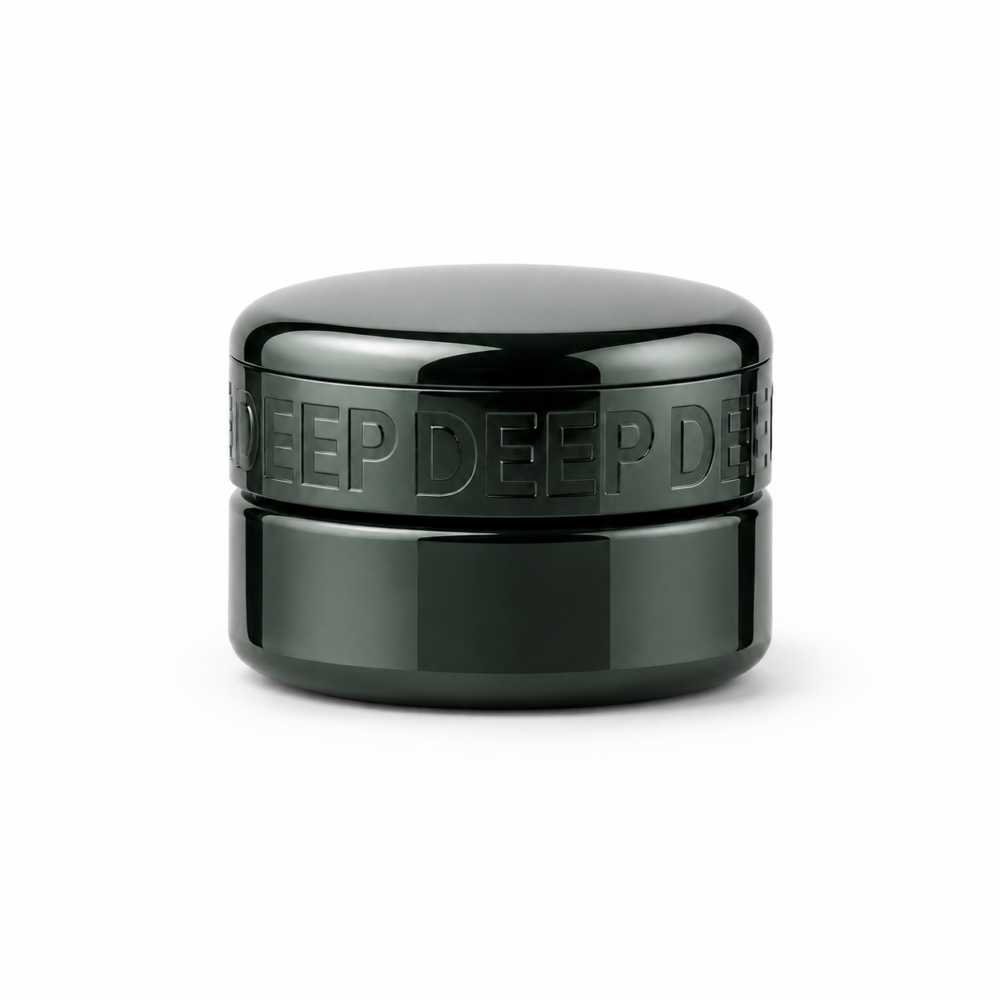
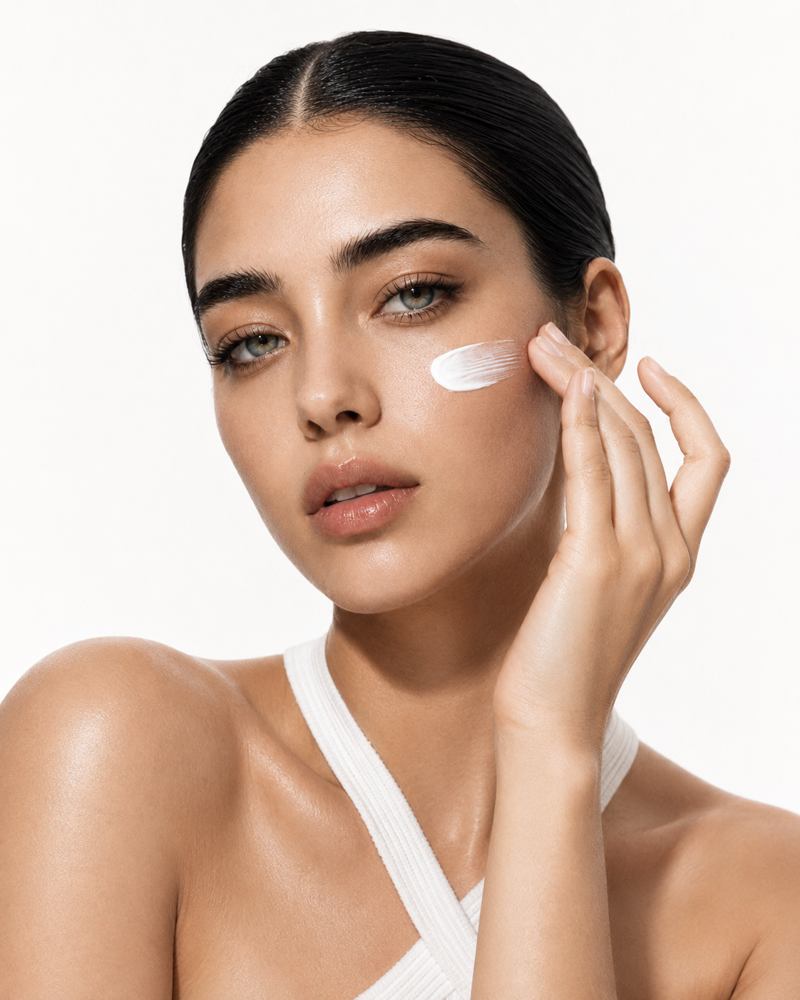
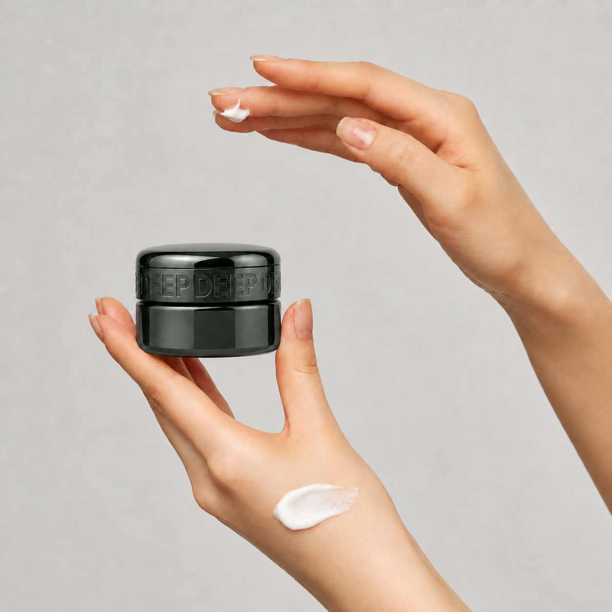
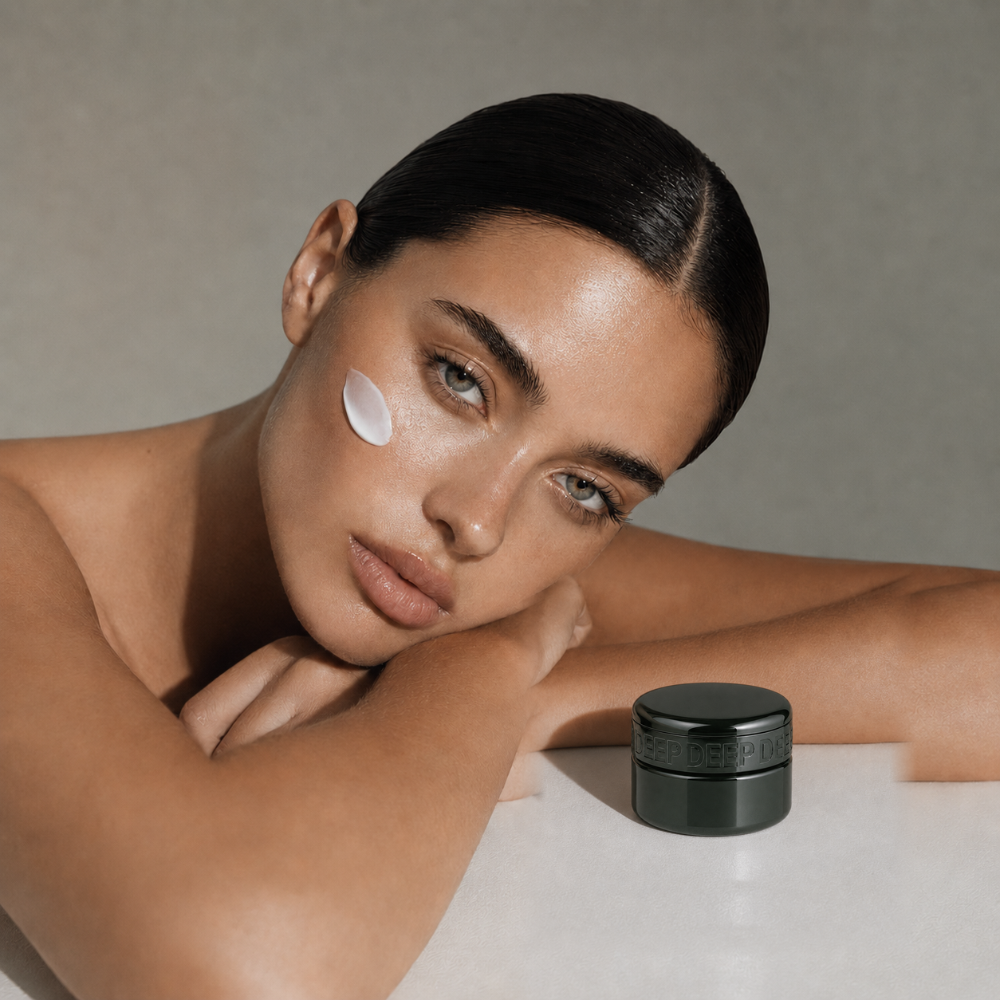
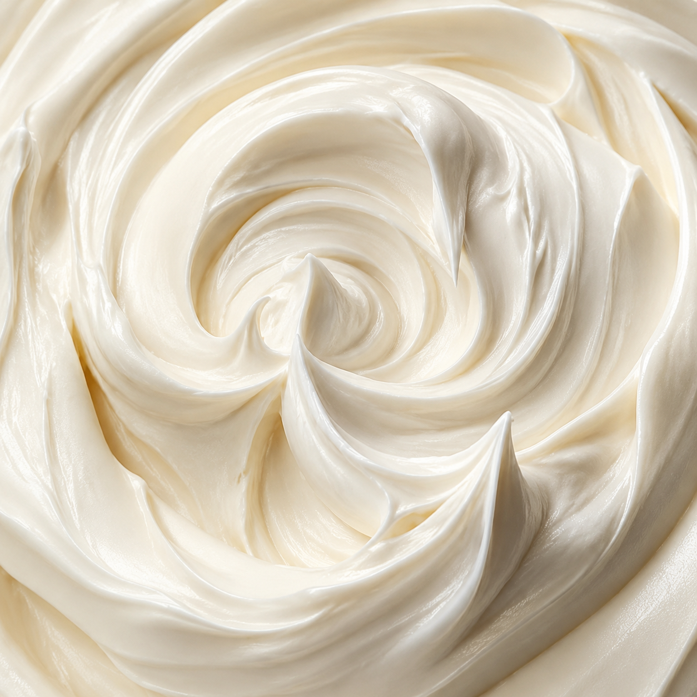

올리고, 채우고, 다시 깨어나는 피부.
나노파티클 PDRN과 저분자 콜라겐, NMN과 프록실린을 담아 골기 관리 후 피부의 탄력·주름·보습 장벽을 집중적으로 케어하는 고밀도 밤 크림입니다.
집중적인 골기 관리 후 피부에는 충분한 수분과 영양, 편안한 진정
그리고 외부 환경으로부터 피부를 보호할 수 있는 보습막이 필요합니다.
DEEP™ LIRA CRÈME은 관리 후 피부를 위한 고밀도 스킨 리모델링 크림입니다.
나노파티클 PDRN과 저분자 콜라겐, NMN과 프록실린이 피부 탄력과 밀도를 관리하고,
쫀득한 멜팅 밤 제형이 피부에 밀착되어 관리 과정에서 공급한 수분과 유효 성분을 오랫동안 보호합니다.
탄력을 잃은 피부의 밀도 집중 관리
건조하고 지친 피부 컨디셔닝
주름·미백 이중 기능성 케어
관리 후 수분과 유효 성분 보호
쫀득하고 밀도 있는 윤광 완성


"탄력은 올리고, 수분은 채우고, 피부의 건강한 빛을 다시 깨우다."
골기 관리 후 피부에는 무거운 유분감만 남기는 크림이 아니라, 피부에 공급된 수분과 유효 성분을 안정적으로 감싸고 관리 후 피부 컨디션을 편안하게 지켜주는 마무리가 필요합니다.
리라 크림은 피부 굴곡을 따라 부드럽게 녹아드는 멜팅 밤 텍스처로 관리 후 피부에 밀착됩니다. 수분 증발을 방지하는 풍부한 보습막을 형성해 촉촉하고 탄탄한 피부 컨디션을 오래 유지합니다.
"골기 관리가 끝난 순간, 피부를 지키는 진짜 케어가 시작됩니다."
나노파티클 기술을 적용한 PDRN이 건조하고 지친 피부에 수분과 영양을 공급하고, 피부를 건강하고 생기 있게 가꿔줍니다.
외부 자극과 집중 관리로 불편해진 피부 컨디션을 편안하게 관리하며 매끄럽고 균일한 피부결을 완성합니다.
"나노파티클 기술로 완성한 정교한 피부 컨디셔닝."
나노파티클 기술을 적용한 저분자 콜라겐과 프록실린이 탄력을 잃고 건조해진 피부에 풍부한 수분과 유연함을 공급합니다.
피부 표면에 부드럽고 쫀쫀한 보습막을 형성해 거친 피부결을 촘촘하고 매끄럽게 정돈하고, 편안한 사용감과 탄력 있어 보이는 피부 인상을 완성합니다.
"피부에 촘촘하게 채우는 콜라겐 탄력 밀도."
DEEP™ LIRA CRÈME은 주름 개선과 미백 기능성을 갖춘 이중 기능성 크림으로 기획됩니다.

주름 개선 기능성 성분인 아데노신이 탄력을 잃은 피부를 집중적으로 관리합니다.
건조로 인해 깊어 보이는 잔주름과 거친 피부결을 매끄럽게 정돈하고, 콜라겐·PDRN·펩타이드 성분과 함께 탄탄하고 생기 있는 피부를 완성합니다.
"주름은 매끄럽게, 피부 인상은 탄탄하게."
처음 덜어낼 때는 꾸덕하고 밀도 높은 밤처럼 느껴지지만 체온에 닿으면 부드럽게 녹아 피부에 고르게 펼쳐집니다.
관리 후 피부에 빈틈없이 밀착되어 풍부한 영양감과 보습감을 전달하고, 피부를 편안하게 감싸는 쫀쫀한 보호막을 남깁니다.
"처음에는 꾸덕하게, 피부 위에서는 부드럽게, 마무리는 쫀쫀하게."

"체온으로 녹이고, 손끝으로 눌러 밀착하고, 관리의 마지막을 깊게 지키다."